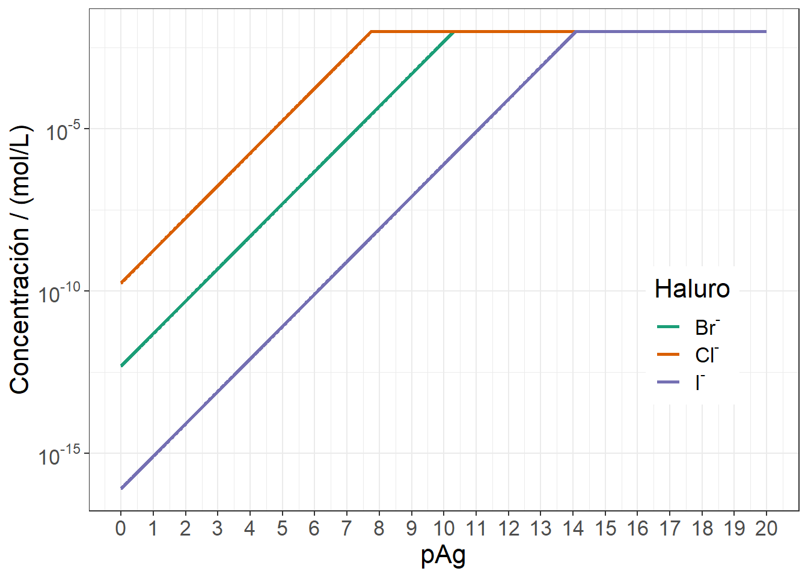
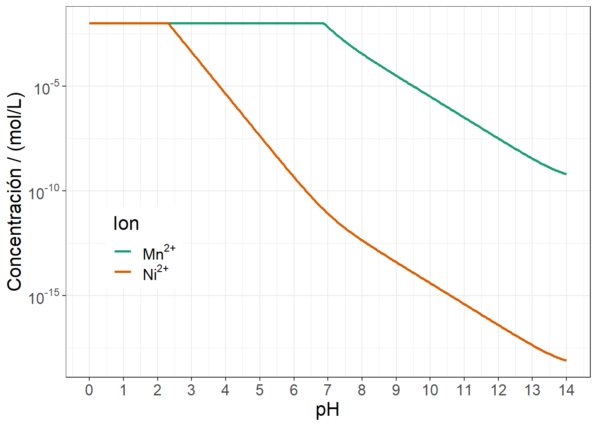

\(\require{mhchem}\)
Calcule la curva de precipitación fraccionada de la siguiente mezcla de sales: \(\ce{KCl}\), \(\ce{KBr}\) y \(\ce{KI}\), con \(\ce{AgNO3}\) cambiando el pAg desde 0 hasta 20.
\[\begin{array}{rcl} \ce{KCl + AgNO3} & \ce{->} & \ce{AgCl(s) + KNO3(ac)} \\ \ce{KBr + AgNO3} & \ce{->} & \ce{AgBr(s) + KNO3(ac)} \\ \ce{KI + AgNO3} & \ce{->} & \ce{AgI(s) + KNO3(ac)} \\ \end{array} \]
\[\begin{array}{rl} [\ce{Ag^+}] & = \displaystyle 10^{-\ce{pAg}} \\ [\ce{Cl^-}] & = \displaystyle \cfrac{K_{\text{s}}(\ce{AgCl})}{[\ce{Ag^+}]} \leq c(\ce{KCl})\\ [\ce{Br^-}] & = \displaystyle \cfrac{K_{\text{s}}(\ce{AgBr})}{[\ce{Ag^+}]} \leq c(\ce{KBr})\\ [\ce{I^-}] & = \displaystyle \cfrac{K_{\text{s}}(\ce{AgI})}{[\ce{Ag^+}]} \leq c(\ce{KI})\\ \end{array} \]
Se define las constantes de solubilidad y las concentraciones de cada una de las sales.
Ks.AgCl <- 10^-9.74
Ks.AgBr <- 10^-12.3
Ks.AgI <- 10^-16.08
cKCl <- 0.0100
cKBr <- 0.0100
cKI <- 0.0100Se define el pAg entre 0 y 20; y se calcula la concentración de cada uno de los haluros.
pAg <- seq(0, 20, by = 0.01)
Ag <- 10^-pAg
Cl <- Ks.AgCl / Ag
Cl[Cl > cKCl] <- cKCl
Br <- Ks.AgBr / Ag
Br[Br > cKBr] <- cKBr
I <- Ks.AgI / Ag
I[I > cKI] <- cKISe acomodan los datos y se construye la gráfica.
if (!require("tidyverse")) install.packages("tidyverse")
if (!require("scales")) install.packages("scales")
df <- data.frame(x = pAg, Cl, Br, I) %>%
pivot_longer(names_to = "key",
values_to = "y",
-x)
fig <- ggplot(df,
aes(x = x,
y = y,
colour = key)
) +
geom_line(size = 1L) +
scale_color_brewer("Haluro",
labels = c(bquote(paste(Br^"-")),
bquote(paste(Cl^"-")),
bquote(paste(I^"-"))
),
palette = "Dark2",
direction = 1) +
labs(x = "pAg",
y = "Concentraci\U000F3n / (mol/L)") +
scale_x_continuous(breaks = 0:20) +
scale_y_continuous(trans = log10_trans(),
breaks = trans_breaks("log10", function(x) 10^x),
labels = trans_format("log10", math_format(10^.x))) +
theme_bw() +
theme(text = element_text(size = 16),
legend.position = c(0.85, 0.35))
print(fig)
\(\require{mhchem}\)
Calcule la curva de precipitación fraccionada en función del pH de la siguiente mezcla de sales: \(\ce{Mn(NO3)2}\) y \(\ce{Ni(NO3)2}\), en una solución saturada de \(\ce{H2S}\) 0.1000 mol/L.
\[\begin{array}{rcl} \ce{Mn(NO3)2 + H2S} & \ce{->} & \ce{MnS(s) + 2 HNO3(ac)} \\ \ce{Ni(NO3)2 + H2S} & \ce{->} & \ce{NiS(s) + 2 HNO3(ac)} \\ \end{array} \]
\[\begin{array}{rl} [\ce{Mn^{2+}}] & = \displaystyle \cfrac{K_{\text{s}}(\ce{MnS})}{[\ce{S^{2-}}]} \leq c(\ce{Mn(NO3)2})\\ [\ce{Ni^{2+}}] & = \displaystyle \cfrac{K_{\text{s}}(\ce{NiS})}{[\ce{S^{2-}}]} \leq c(\ce{Ni(NO3)2})\\ [\ce{S^{2-}}] & = \displaystyle \alpha(\ce{S^{2-}}) \times c(\ce{H2S}) \\ \alpha(\ce{S^{2-}}) & = \displaystyle \cfrac{K_{\text{a}1}K_{\text{a}2}}{[\ce{H3O+}]^2 + K_{\text{a}1}[\ce{H3O+}] + K_{\text{a}1}K_{\text{a}2}} \\ \end{array} \]
Se define la función para calcular los valores de \(\alpha\) para todas las especies ácido-base.
alp <- function(pH, pKa){
n <- length(pKa)
num <- 10^(-pH * (n:0) - cumsum(c(0, pKa)))
num / sum(num)
}Se define las constantes de solubilidad y las concentraciones de cada una de las sales.
Ks.MnS <- 10^-10.5
Ks.NiS <- 10^-19.4
cMnNO3.2 <- 0.0100
cNiNO3.2 <- 0.0100
cH2S <- 0.100Se crea un vector que corresponde al pH.
pH <- seq(0, 14, by = 0.05)Se definen las constantes de acidez para el ácido sulfhídrico.
pKa.H2S <- c(7.02, 14.0)Se calcula el \(\alpha\) para todas las especies del ácido sulfhídrico.
alp.HnS <- t(sapply(pH, alp, pKa.H2S))Se extrae el \(\alpha\) para el ion sulfuro y se calcula la concentración de este ion.
alp.S <- alp.HnS[,3]
S <- alp.S * cH2SSe calcula la concentración de manganeso(II) y níquel(II).
Mn <- Ks.MnS / S
Mn[Mn > cMnNO3.2] <- cMnNO3.2
Ni <- Ks.NiS / S
Ni[Ni > cNiNO3.2] <- cNiNO3.2Se acomodan los datos y se construye la gráfica.
if (!require("tidyverse")) install.packages("tidyverse")
if (!require("scales")) install.packages("scales")
df <- data.frame(x = pH, Mn, Ni) %>%
pivot_longer(names_to = "key",
values_to = "y",
-x)
fig <- ggplot(df,
aes(x = x,
y = y,
colour = key)
) +
geom_line(size = 1L) +
scale_color_brewer("Ion",
labels = c(bquote(paste(Mn^"2+")),
bquote(paste(Ni^"2+"))
),
palette = "Dark2",
direction = 1) +
labs(x = "pH",
y = "Concentraci\U000F3n / (mol/L)") +
scale_x_continuous(breaks = 0:20) +
scale_y_continuous(trans = log10_trans(),
breaks = trans_breaks("log10", function(x) 10^x),
labels = trans_format("log10", math_format(10^.x))) +
theme_bw() +
theme(text = element_text(size = 16),
legend.position = c(0.15, 0.35))
print(fig)